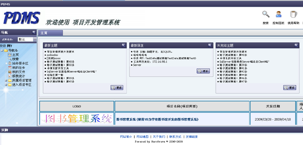

PDMS
网站简介
什么是PDMS?
PDMS为项目开发管理系统网站(软件)，近年来市面上也出了很多项目协作和管理工具，例如有名的JIRA，Xplanner，版本控制工具svn，cvs等等。这些工具各有个的特点，关键使用工具不是目的，目的是要在工具辅助基础使用项目管理思想上最大限度的对项目进行控制，对软件构造过程进行不断持续的优化和改造，这样才能使软件企业和项目得到良性发展。
本系统则和这些工具并无冲突。
PDMS的全称是什么?
PDMS的全称为Project Development Management System，即项目开发管理系统。
PDMS能够提供什么服务?
本系统旨在提供一个开放透明的管理平台，在项目中主要使用其作为一个被动信息共享平台，实现项目的开发高效化、信息共享化、管理科学化。网站的主要定位在公司内部职员相互之间进行的软件开发管理，为项目组内部开发与交流提供一个便捷、透明、相对持久的平台。
网站地图
登录
用户访问PDMS，首先要进行用户身份验证，验证通过后才可以使用。
当然，本项目也设立了访客机制，可以供还没有权限使用本系统的客户预先感受、熟悉一下本系统。
本系统不提供注册功能，用户由管理员建立。
主页

主页显示包含页眉、页脚、导航条、主体显示区四部分。
页眉为PDMS LOGO、简单说明及全局公共模块的链接。
页脚为帮助文档的分类导航，用户点击不同的帮助可获得对PDMS不同方面的了解。
导航条为本系统各个模块功能的链接集，按用户所拥有权限的不同动态显示。
主体显示区为项目本身的一些统计信息。与BBS论坛相似，主体显示区首先显示的是PDMS所有帖子的统计信息，包括最新主题、最新回复、未完结主题三部分。
下面则是用PDMS进行管理的项目列表，点击它们可以进到具体的项目中去。
搜索
PDMS为系统用户提供了纵向搜索功能，用户可以按照帖子、用户、任务、项目进行4个大分类和数个小分类的搜索。
搜索页面分为2部分，上半部为搜索条件设置级联菜单，下半部为搜索实际结果。选好搜索条件后，点击搜索钮，显示搜索结果。
控制面板
控制面板是对当前登录用户的个人统计页面，用户可以了解自己发帖情况(最近发表主题与最近回复主题)，并可以修改个人注册信息资料。
项目专区
用户能够进入的项目专区，为正处在开发阶段的项目。项目专区页面包括项目公告和项目相关主题帖2部分。
自己发的主题帖只有自己可以锁，自己的发言只可以自己更改（管理员除外），另外要注意已完成历史任务的讨论帖及求助帖要及时锁。
帖子主题
帖子信息为所选择的主题帖及其回复内容的处理页面。用户可以对所选中的帖子进行修改、回复等操作。
我的文件
用户可以选择上传文件或者删除文件，其中有系统文件管理权限的用户可以管理所有文件，其他用户只能管理自己的文件。
我的任务
此模块和所属项目管理模块中的任务管理相对应，项目开发人员在此模块内进行任务接收和提交的处理。
任务是可以重复提交的，项目负责人收到的总是最新的那次提交。任务表和任务提交信息表是一对多的关系，任务表中有一个字段用来指向最新的提交信息，其余的对应提交信息则为历史记录。
所属项目管理
所属项目管理通常是项目经理等项目负责人使用的模块，主要包括项目基本信息管理和项目任务管理。
PDMS的任务具有4类状态：分配状态、确认状态、完成状态、验收状态。各层状态逐渐深入，不存在跨层的任务。
任务管理包括创建任务、编辑任务、分配任务、验收任务及删除任务，各个机能对应不同状态的任务。
项目管理
拥有项目管理权限，则可以进行PDMS的所有项目管理，通常这一功能由管理员权限级别来操作。
PDMS不支持把已经关闭的项目再开，如果需要进行项目的二次开发，请新建项目。
会员管理
拥有用户管理权限，则可以进行PDMS的所有注册用户管理，通常这一功能由管理员权限级别来操作。
在这个模块内，可以新建用户，也可以修改现有用户。新建或修改用户的时候可以同时进行权限的编辑，包括用户组、用户角色、拥有权限。
文件管理
系统的所有上传文件在此模块内进行管理。另外已上传的文件也可以作为任务提交时的附件。
过度的上传下载附件会大大降低网站的性能，考虑到PDMS对文件上传下载的需求不是很大，上传的文件没有直接提供下载按钮，而是在前台显示中暴露文件的实际存储地址。
用户组管理
为了方便权限集合设计，系统提供了用户组管理模块。
拥有用户组管理权限，则可以进行用户组管理和给用户附加用户组的处理，通常这一功能由管理员权限级别来操作。
用户组包括用户组名称、组内成员、拥有权限、拥有身份几个部分。管理者可以点击不同的按钮进行相应的用户组修改。当修改用户组后，影响的用户信息也会一并进行修改。
报表统计
这一功能是PDMS对在网站中进行的项目开发管理而设置的图表统计，用于让企业经营者和项目负责人等人提供一个分析统计的平台，使他们对项目开发管理有着更好的把握。
项目工作量统计饼状图着重于统计项目间的开发情况，每一个项目为饼图的一部分，所占比例的大小由项目任务量决定。项目任务量等于所有已完成任务的花费天数除以组员人数。
年度任务统计柱状图用于统计公司整体的项目开发任务完成状况。其中的数据显示2组，一组为已完成任务总计，另一组为所有任务合计。2组任务的对比显示了任务的完成率。此报表的统计量为当月往前推11个月，总计显示12个月即一年的任务统计。
关于我们
本项目的开发及维护由LUSuo(atea)及HeroGrave提供。LUSuo(atea)是一名java软件工程师，HeroGrave是其创立的一个开发小组。
如果您对PDMS有什么想法或对开发者有任何兴趣，欢迎咨询。
联系方式
联系人：LUSuo(atea)
QQ： 48233962
Email：
友情链接
HeroGrave技术BLOG：http://www.blogjava.net/atealxt/
HeroGrave生活BLOG：http://atealxt.yculblog.com/